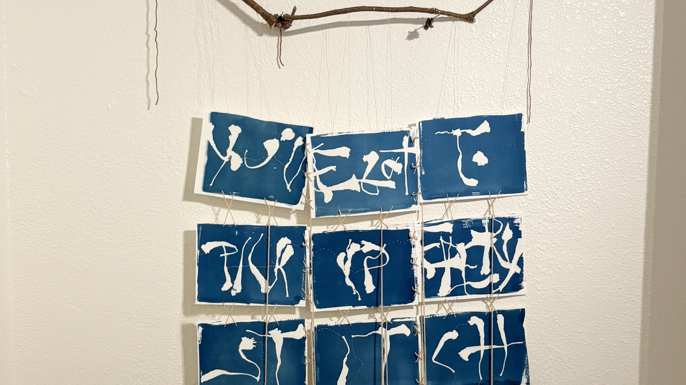
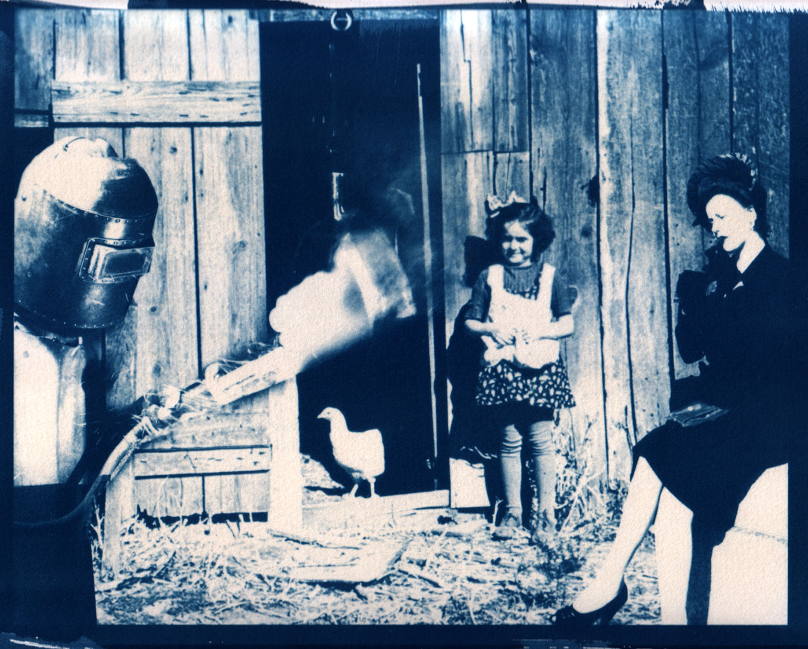
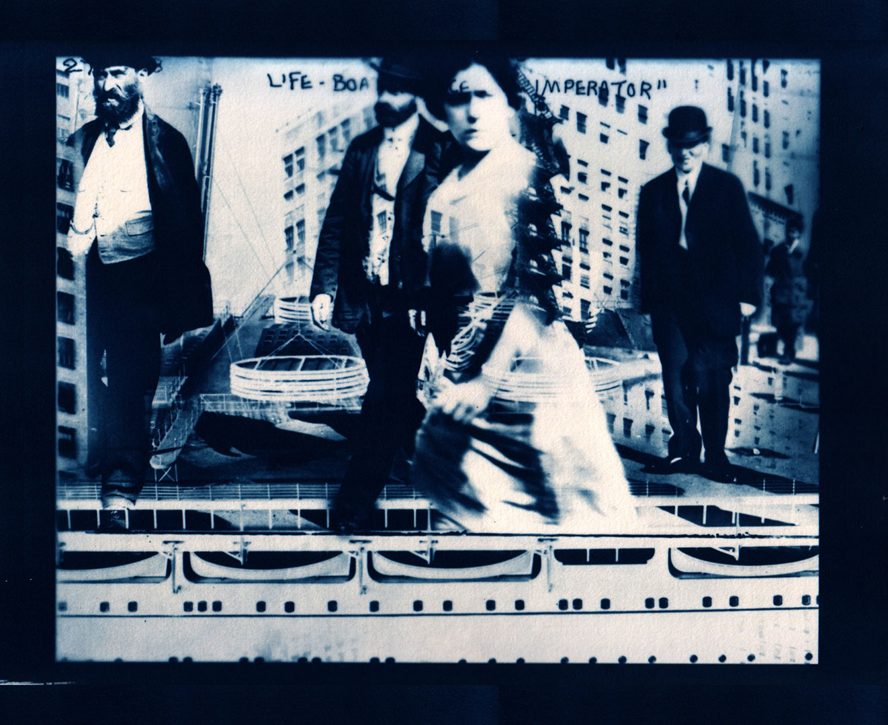
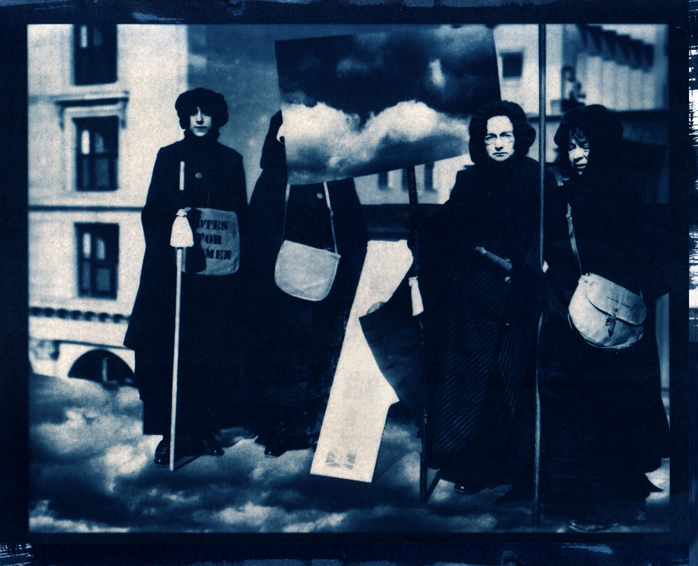
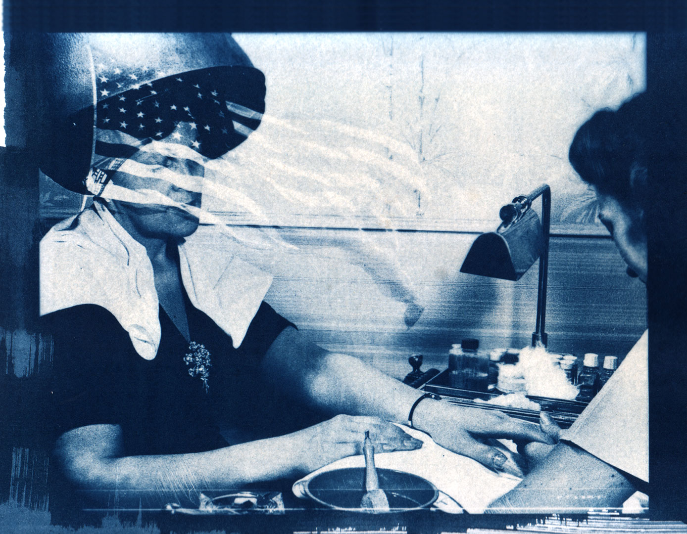
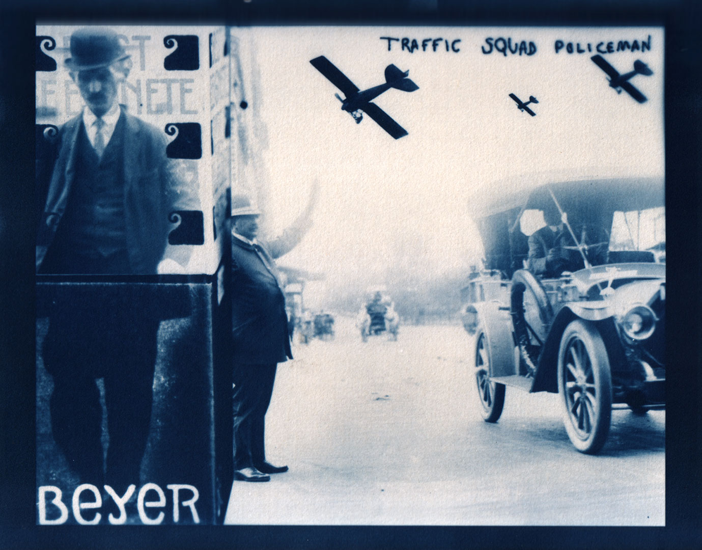
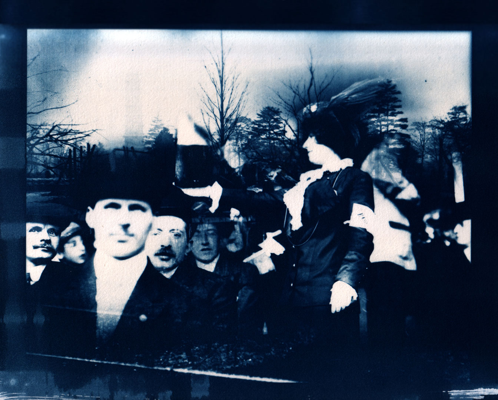
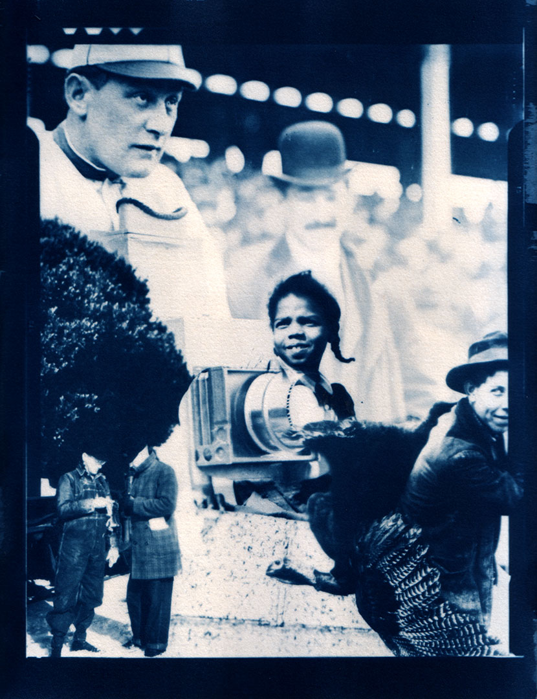
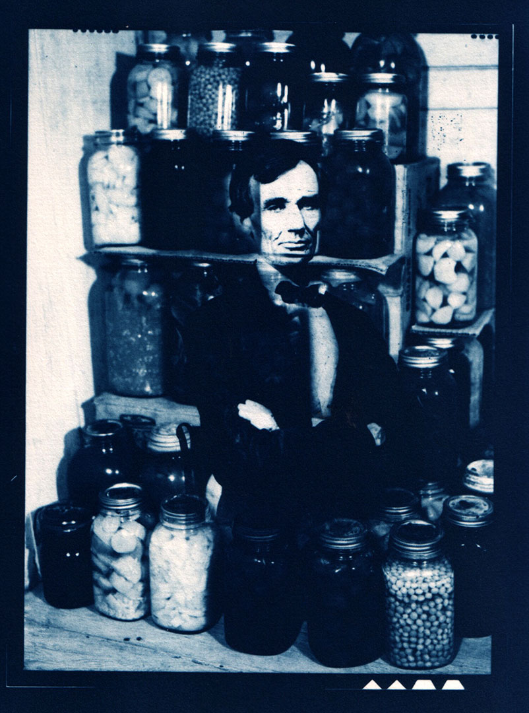

“Egg On Your Face” from The Library of Congress, Remixed series,
2012.
12 by 9 inches on water color paper

“A New Lease On Life” from The Library of Congress, Remixed
series, 2012.
12 by 9 inches on water color paper

“The Sky's the Limit” from The Library of Congress, Remixed
series, 2012.
12 by 9 inches on water color paper

“High and Dry” from The Library of Congress, Remixed series, 2012.
12 by 9 inches on water color paper

“Not My Cup of Tea” from The Library of Congress, Remixed series,
2012.
12 by 9 inches on water color paper

“Money To Burn” from The Library of Congress, Remixed series,
2012.
12 by 9 inches on water color paper

“A Little Birdie Told Me” from The Library of Congress, Remixed
series, 2012.
9 by 12 inches on water color paper

“Food for Thought” from The Library of Congress, Remixed series,
2012.
9 by 12 inches on water color paper
Cyanotype wall hanging: You've Got To Pick Up Every Stitch, 2026. Made in the sun in Dallas, Texas. Approx. 42 inches by 6 feet. Moonflower (also known as “witches weed”)stems, letters made with dried moonflowers, cyanotype, water color paper, Angora wool.
Cyanotype prints: The Library of Congress, Remixed, 2012. Made in the sun in Long Beach, California.
Prints are 12 by 9 (or 9 by 12) inches. Digital negatives of collages combine images from the Library of Congress's
public, digital archive circa 2012.
These collages juxtapose keywords within common English idioms. I wondered how these
idioms, which are often hard to translate,
might be reinterpreted through public imagery found in our commons, by way of photographs in the Library of Congress digital archive.
The collages are printed as cyanotypes, one of earliest photographic printing processes, which produce a cyan-blue
print when exposed to UV light (such as the sun). This series combines digital collage with a historical
photographic process to explore
the relationship between language and image, digital and analog methods, and the ways in which meaning is constructed and/or made ambiguous.